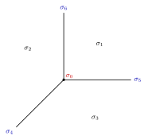

Example 12.1.3. In this case, $\Sigma $ is the fan in 12.1 consisting of three $2$-dimensional cones $\sigma _1$, $\sigma _2$ and $\sigma _3$; three $1$-dimensional cones $\sigma _4$, $\sigma _5$ and $\sigma _6$; one $0$-dimensional cone $\sigma _0$.

12.1 The fan $\Sigma $ of $\mathbb {P}^2$. The three rays $\sigma _4,\sigma _5,\sigma _6\in \Sigma (1)$ subdivide $N_{\mathbb {R}}$ into three full-dimensional cones $\sigma _1,\sigma _2,\sigma _3\in \Sigma (2)$; the origin is the unique cone of dimension zero.
The fan $\Sigma $ is just the fan of $X=\mathbb {P}^2$. Under the orbit-cone correspondence, we have